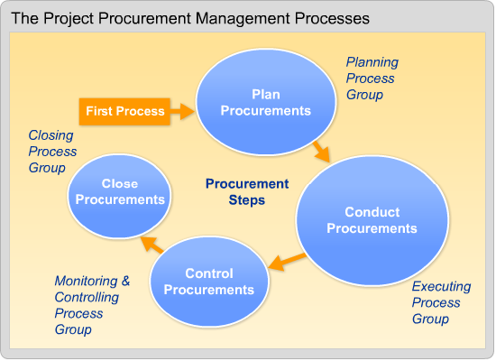

| Contracts Video Lecture |
Procurement Management is becoming more and more essential to project management. As the global economy, competition, and the complexity of projects all increase, it is important to draw on the right expertise in order to carry out a project. Sometimes the project is simply too large for the organization and a portion needs to be subcontracted to another firm. Or perhaps the project requires expertise that is lacking within the organization, so, again, the project manager needs the expertise to subcontract some work.
Using standard project management terminology, the organization running the project is the buyer. The buyer hires (procures) an outside company, known as the seller, to do some of the work. The buyer procures the services of the seller. This sounds simple but it’s actually quite complex and involves many strategic decisions.
Procuring resources always requires legal input, but project managers do not need to be experts in the legal aspects of procurement.
Procurement Management is the set of processes used to purchase or acquire the products, services, or results needed from outside the project team to perform the work. Subcontracting work is also known as outsourcing and it occurs on nearly all government and private industry projects. Smaller organizations may not have a formal outsourcing process, so as the project manager, you will be responsible for making sure the correct vendor is identified and engaged and that the project is managed to the satisfaction of your organization.
Here are critical contracting skills for a project manager:
There is a strong correlation between risks and contract types. Sometimes, you can add terms and conditions to contracts to make them less risky. Also, you can outsource potentially high-risk aspects of a project to another party.
In any contractual arrangement there are always risks, so it is critical to understand precisely who is responsible for what aspects of project and where the risks are, throughout the contract. I am going to use the terms buyer and seller in the following way: the company doing the project is the “buyer” and the other party to the contract, the subcontractor, is the “seller.”
Of course, sometimes a project manager will be managing a project as the seller, so you will need to understand the risks from the seller’s perspective. There are three basic types of contracts:
We will now examine the key elements of each type contract, as well as the risks to buyers and sellers.
Fixed-Price (FP) contracts typically involve an agreed-upon price. The contract may also specify a delivery date, a specific level of quality, and performance criteria. FP contracts are also known as lump-sum agreements.
Once the contract is signed (executed), all of the risks are on the seller to perform and deliver. These types of contracts usually work best when the project is low risk, which means that the scope is well-defined. FP contracts work well for products that are commodities or well-defined parts or components. The primary disadvantage for the seller is the risk of underestimating the project costs.
The main advantage of an FP contract for the buyer is the cost is known. The disadvantage of an FP contract for the buyer is that it is more difficult and more costly to prepare. Also, mistakes in the scope are costly, which makes it a bad idea for uncertain projects.
The disadvantage for sellers is the risk of underestimating the project’s costs. On the other hand, when changes are required, the seller is usually at an advantage because it is difficult to replace the seller. The seller strategy, when asked for changes, is usually to accept the small changes and then to make it the losses on the big changes.
For an FP contract, the buyer must develop the scope. If the buyer develops a poor scope, or mistakes are made in the scope requirements, it will be costly for the buyer. If the seller detects errors in the scope, they will immediately ask for change orders. The disadvantage to the buyer is that, once the contract is started, it may be very difficult to negotiate changes or customizations as there are no incentives for the seller to agree.
In this type of contract the seller assumes all of the risks, which are specified in the terms. If unexpected events occur, such as increases in raw material prices, higher energy or delivery costs, the seller has to eat any resulting costs and accept a lower profit or, perhaps even incur a loss.
There are several types of FP contracts, such as:(See W&K, section 18.1 for examples of how to compute the incentive fee.)
Another type of contract is known as Cost-Plus (CP). Under a CP contract, the seller is reimbursed for all allowable costs incurred. Depending on the contract, an additional amount can be added for profit or fee.
The key word above is allowable. There is a vast array of government regulations as to what constitutes allowable costs. Basically, allowable costs are those that are directly related to the project. This includes labor, fringe, overhead, and G&A. The fee is usually a percentage of the bid cost.
In this arrangement, the buyer essentially assumes all of the risks. If the project takes longer or goes over budget, it is the buyer’s problem. The disadvantage of a CP contract is that there is no particular incentive for the seller to hold down the costs, other than not to annoy the buyer and to preserve the company’s reputation. A CP contract is expensive for the buyer because the buyer must monitor the seller’s costs.
There are multiple types of CP contracts, designed to share or allocate risks between buyer and seller. Incentives can be based on performance or schedule metrics and may include cost-sharing clauses. There are several types of CP contracts:
In a Time-and-Materials (T&M) contract the seller bills for time, usually at a fixed rate per hour. The materials that can be billed for usually includes travel. Overhead costs and the fee are built into the time rate. A T&M contract is often open-ended and functions like a hybrid between Fixed-Price and Cost-Plus.
T&M contracts are used when the work is undefined and the risks all lie with the buyer.
All contract types can be modified by adding or subtracting combinations of conditions.
For example, we could take a Fixed-Price contract and add an incentive bonus clause to reward the seller it they deliver early or if the performance exceeds defined specifications. We could also tag penalties onto a Fixed-Price contract if the seller is late or if there are quality or performance issues. All of these modifications are designed to share the risks and to take advantage of potential opportunities.
The major item in deciding where the risks are is the quality of the scope document. If the requirements are unknown or risky, then a CP contract is preferable. If the requirements are well-defined, then an FP contract is preferable. Between these two extremes lie various degrees of scope quality and different incentives for performance.
An extreme version of sharing is the concept of forming a joint venture, in which all of the risks and rewards are shared.
A few other ways in which contracts may be modified include:
With Fixed-Price contracts, sellers assume all of the risks. It is only reasonable that they should be compensated for these risks and earn a higher comparable profit than is the case with other types of contracts.
Conversely, with Cost-Plus contracts, buyers assume all of the risks. They will expect the seller to work for a lower potential profit. All of the other types of contracts, with their various risk sharing arrangements should theoretically move the buyer’s costs and the seller’s profits accordingly.
In W&K, Professor Kanabar provided the following chart, which pretty well defines the contract/risk tradeoffs:
Contract/Risk Tradeoffs
| Scope | Very Little | Little | Partial | Fairly Complete | Complete |
| Uncertainty/Risk | High | Medium | Low | ||
| Contract Types | Cost + % | Cost + % + Incentive | Cost + Fixed Fee | Fixed Price + Incentive | Firm Fixed Price |
| Risk Allocation | Contractor Risk 0% | Contractor Risk 100% |
So, there are a number of choices for structuring contractual relationships, depending on the aspects of the project and the importance of the risk characteristics of cost, time, quality, and/or performance.
Finally, remember that if you are the seller, your customer is the buyer. The buyer may want to work with you on how assess, transfer, and share the risks, and build that into the contract.
Below is a list of common terms related to contracts and procurement and their basic definitions.
Bid
Also called a quote, a bid is a cost estimate given to the project manager when the decision to hire a contractor or vendor is based on price.
Bidder conference
Held before prospective contractors or vendors prepare their bids or proposals for the purpose of allowing prospective contractors or vendors to ask questions about the requests for proposal, received before or during the conference.
Breach of contract
Failure to meet all contractual terms agreed upon by both parties.
Centralized contract administration
Gives a project manager less control because supplies needed for a project are ordered in a large quantity, with one person administering numerous contracts.
Completion contract
Fulfilled when one party completes a specific activity or provides a particular resource for a project.
Contract
This is a legally binding agreement.
Contractual clause
A segment written into a contract that limits a party’s risk or offers an incentive to ensure that the other party fulfills contractual obligations.
Decentralized contract administration
Gives a project manager more control because supplies are ordered at any time and in any amount.
Maximum and minimum fees
Calculated as a percentage of contract’s target cost; establish limits to the contractor’s profit in the event that the contractor goes over budget while completing project work.
Order of precedence clause
Determines which part of the contract will control the order of importance or obligation; ranks certain criteria above others.
Point of total assumption
Time at which a contractor accepts full responsibility for any cost exceeding the cost set in the contract.
Profit ceiling
Maximum amount of total profit eligible to be earned by the contractor.
Profit floor
Minimum amount of total profit eligible to be earned by the contractor.
Proposal
Used when the decision to hire a contractor or a vendor is based on numerous factors such as technical skills, breadth of services available, and price.
Request for information (RFI)
Assists in collecting brochures, product samples, information, and list prices from potential sellers when the buyer has little or no history with vendors for the required products or services.
Request for proposal (RFP)
Packet of information given to a prospective contractor or vendor that includes the project’s statement of work, resource specifications, criteria used to evaluate the proposal, contractual terms and conditions, and a timetable for responding to the request.
Screening system
System for evaluating proposals that sets minimum requirements for each evaluative criterion and then eliminates those proposals that fail to meet the minimum requirements.
Sharing arrangement
Ratio of the project parent company’s financial responsibility to the contractor’s financial responsibility for every dollar that each party spends toward contract fulfillment.
Target cost
Estimated cost of specific resources.
Target profit
Amount of profit the contractor expects to make by entering into a contract.
Term contract
Binds an individual or organization to work for a specific length of time, with payment made when work for specific periods of the time is completed.
Warranties
Offers of free repair or replacement of a defective resource, product, or service.
Weighting system
System for evaluating proposals that assigns a numerical value to each evaluative criterion, thereby assisting in the process of keeping track of which proposals meet each criterion.

Project Procurement consists of four processes: